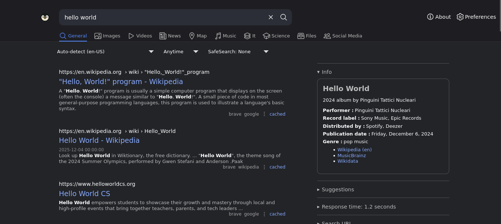
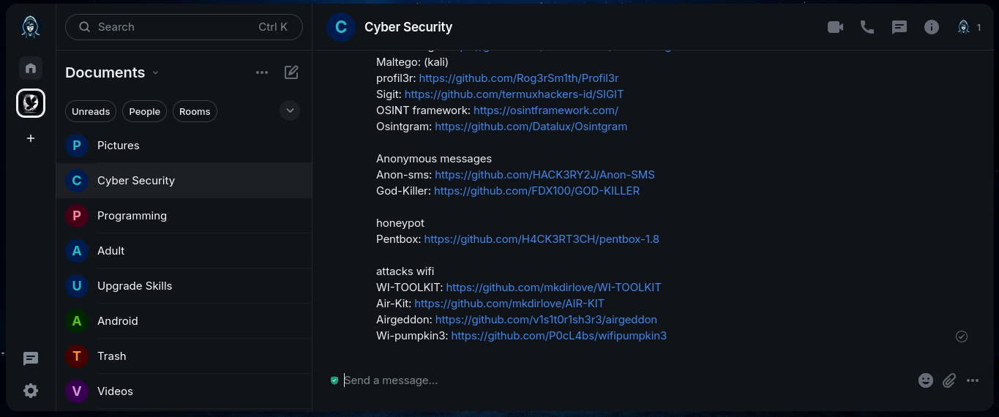
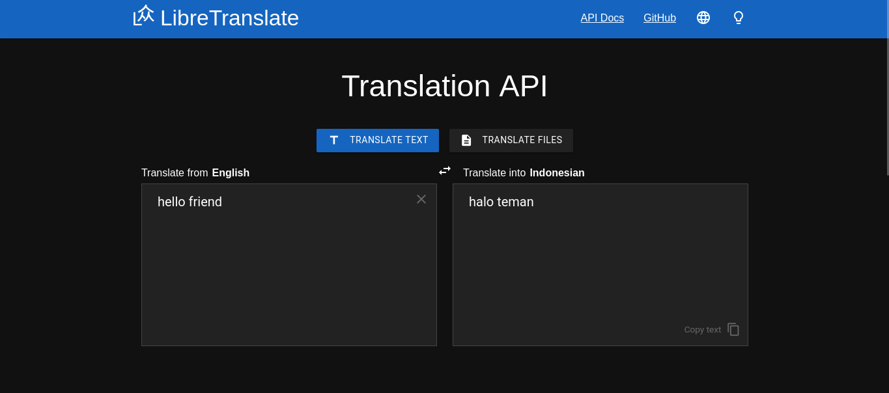
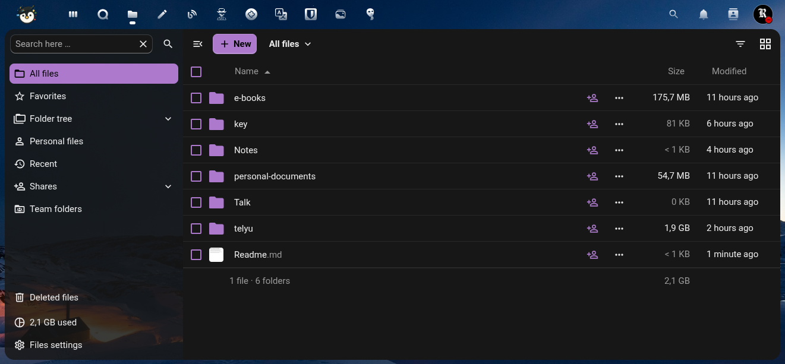
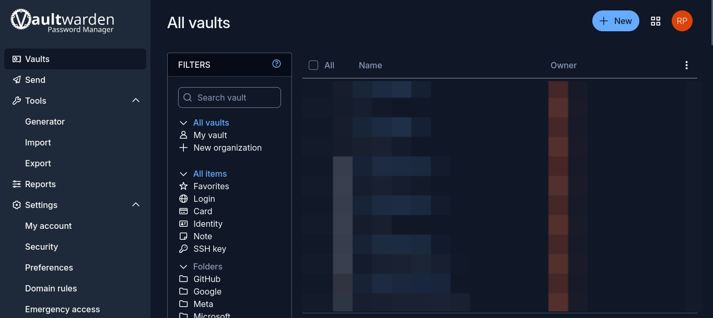
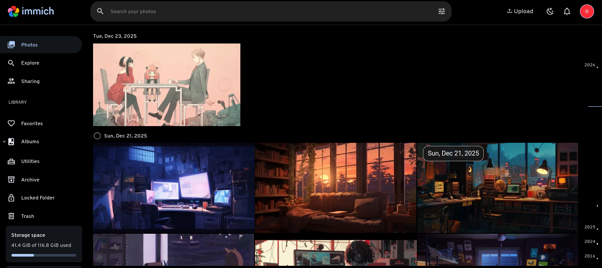

Risnanda Pascal
AvailableMembangun fondasi kedaulatan digital melalui sistem mandiri dan infrastruktur privat. Berfokus pada kemerdekaan data, penguasaan penuh atas teknologi, dan solusi self-hosted yang membebaskan pengguna dari ketergantungan big tech.
Privacy-focused Ecosystem
Request a Privacy Project
Huntor
Mesin pencari berdaulat. Tidak ada profil pengguna, tidak ada riwayat dilacak, hasil pencarian murni milik Anda.

Matrix Chat
Server mandiri dengan enkripsi penuh. Terhubung dengan bridge Telegram & WhatsApp.

Translate
Terjemahan tanpa pelacakan. Data teks Anda tetap privat, tidak dikirim ke server komersial.

Unclouded
File Anda tidak dianalisis, tidak dimonetisasi. Milik Anda, sepenuhnya.

Password Manager
Hanya Anda pemegang kunci utama. Tidak ada akses cadangan dari kami.

Gallery
Foto kenangan Anda tidak menjadi komoditas AI. Backup pribadi yang aman.

Tor Bridge (Obfs4)
Bridge Tor yang di-obfuscate untuk melewati sensor internet. Dapatkan akses tanpa batas dan tanpa pengawasan.
* Dikirim manual (1-2 jam).